大疆都上精灵4了，我们也来学习飞行器原理及传感器吧
本月初，大疆在美国纽约正式发布了最新产品精灵4。Phantom 4作为大疆最新旗舰其最大卖点就是智能航拍，它能以轻点方式进行智能飞行，自动拍摄流畅的跟拍镜头，自动躲避障碍物。然而，高达9000块的售价，让很多普通消费者望而却步，作为硬件工程师，我们先从原理上看看这些飞行器都是怎么玩得吧。
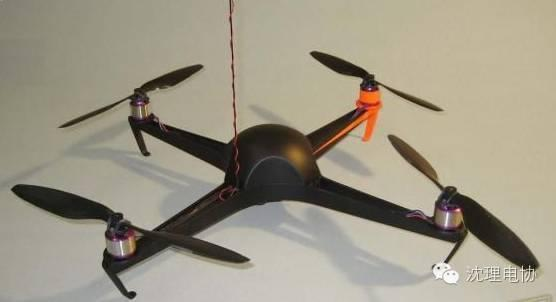
四轴飞行器结构形式如图所示，电机1和电机3逆时针旋转的同时，电机2和电机4顺时针旋转，因此当飞行器平衡飞行时，陀螺效应和空气动力扭矩效应均被抵消。与传统的直升机相比，四旋翼飞行器有下列优势：各个旋翼对机身所施加的反扭矩与旋翼的旋转方向相反，因此当电机1和电机3逆时针旋转的同时，电机2和电机4顺时针旋转，可以平衡旋翼对机身的反扭矩。四旋翼飞行器在空间共有6个自由度(分别沿3个坐标轴作平移和旋转动作)，这6个自由度的控制都可以通过调节不同电机的转速来实现。基本运动状态分别是：
(1)垂直运动;
(2)俯仰运动;
(3)滚转运动;
(4)偏航运动;
(5)前后运动;
(6)侧向运动。
在图中，电机1和电机3作逆时针旋转，电机2和电机4作顺时针旋转，规定沿x轴正方向运动称为向前运动，箭头在旋翼的运动平面上方表示此电机转速提高，在下方表示此电机转速下降。
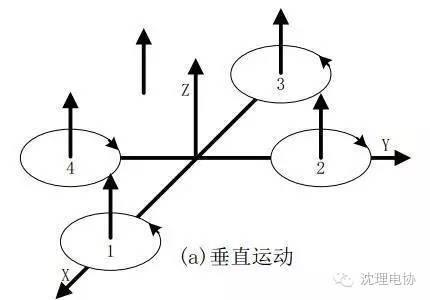
垂直运动相对来说比较容易。在图中，因有两对电机转向相反，可以平衡其对机身的反扭矩，当同时增加四个电机的输出功率，旋翼转速增加使得总的拉力增大，当总拉力足以克服整机的重量时，四旋翼飞行器便离地垂直上升;反之，同时减小四个电机的输出功率，四旋翼飞行器则垂直下降，直至平衡落地，实现了沿z轴的垂直运动。当外界扰动量为零时，在旋翼产生的升力等于飞行器的自重时，飞行器便保持悬停状态。保证四个旋翼转速同步增加或减小是垂直运动的关键。
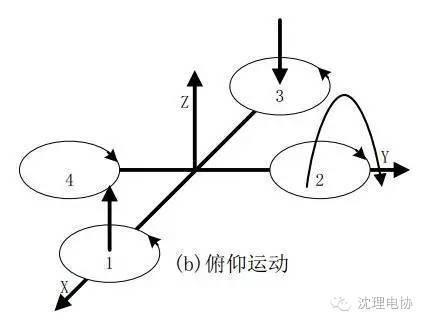
在图b中，电机1的转速上升，电机3的转速下降，电机2、电机4的转速保持不变。为了不因为旋翼转速的改变引起四旋翼飞行器整体扭矩及总拉力改变，旋翼1与旋翼3转速该变量的大小应相等。由于旋翼1的升力上升，旋翼3的升力下降，产生的不平衡力矩使机身绕y轴旋转(方向如图所示)，同理，当电机1的转速下降，电机3的转速上升，机身便绕y轴向另一个方向旋转，实现飞行器的俯仰运动。
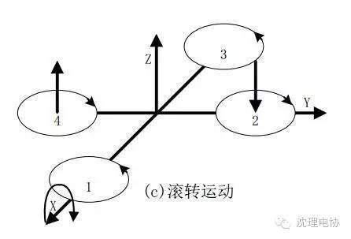
与图b的原理相同，在图c中，改变电机2和电机4的转速，保持电机1和电机3的转速不变，则可使机身绕x轴旋转(正向和反向)，实现飞行器的滚转运动。
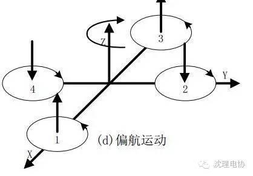
四旋翼飞行器偏航运动可以借助旋翼产生的反扭矩来实现。旋翼转动过程中由于空气阻力作用会形成与转动方向相反的反扭矩，为了克服反扭矩影响，可使四个旋翼中的两个正转，两个反转，且对角线上的来年各个旋翼转动方向相同。反扭矩的大小与旋翼转速有关，当四个电机转速相同时，四个旋翼产生的反扭矩相互平衡，四旋翼飞行器不发生转动;当四个电机转速不完全相同时，不平衡的反扭矩会引起四旋翼飞行器转动。在图d中，当电机1和电机3的转速上升，电机2和电机4的转速下降时，旋翼1和旋翼3对机身的反扭矩大于旋翼2和旋翼4对机身的反扭矩，机身便在富余反扭矩的作用下绕z轴转动，实现飞行器的偏航运动，转向与电机1、电机3的转向相反。
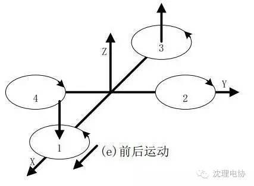
要想实现飞行器在水平面内前后、左右的运动，必须在水平面内对飞行器施加一定的力。在图e中，增加电机3转速，使拉力增大，相应减小电机1转速，使拉力减小，同时保持其它两个电机转速不变，反扭矩仍然要保持平衡。按图b的理论，飞行器首先发生一定程度的倾斜，从而使旋翼拉力产生水平分量，因此可以实现飞行器的前飞运动。向后飞行与向前飞行正好相反。当然在图b图c中，飞行器在产生俯仰、翻滚运动的同时也会产生沿x、y轴的水平运动。
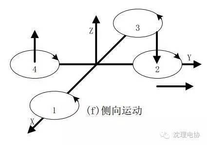
在图f中，由于结构对称，所以倾向飞行的工作原理与前后运动完全一样。
讲完了飞行器是如何飞的，下面我们来说说飞行器上的的关键器件——MEMS传感器。如果把自动驾驶仪比作飞行器的“大脑”，那么MEMS传感器就是“飞行器”的眼耳鼻。正是这些传感器将飞行器的动态信息收集并发给主控单片机，飞行器才能够通过计算得到飞机的姿态和位置。
为什么飞行器要使用MEMS传感器?
要开发飞行器，如何得到飞行器的航姿是第一任务，传统的载人飞行器一般使用机械陀螺和光纤陀螺来完成这项任务，但是受限于体积、重量和成本，在多旋翼等小型飞行器上无法采用这种设备。因此，以MEMS传感器为核心的DOF(Degree Of Freedom,自由度)系统成为唯一的选择。由于近十年来，家用游戏机和手机的迅速发展，使得MEMS传感器在这十几年中得到了飞速的普及，让低成本的运动感知成为了可能，这正是目前的微型飞行器系统形成的基本条件。
飞行器所使用的MEMS传感器与手机和游戏机来自相同的厂家，比如ST microelectronics，INVENSENSE等。MEMS传感器从早期的多芯片组合使用，发展到现在的单芯片集成多轴传感器，从模拟传感器发展为数字传感器，已经经历了多次较大变革。
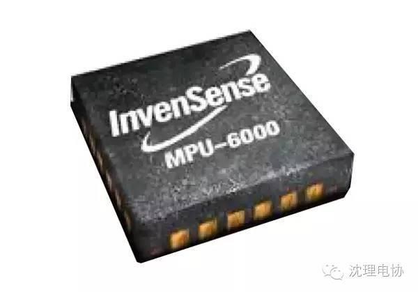
MPU6000是飞行器传感器的王者，虽然新的传感器层出不穷，但是它的地位一直无法撼动。PIXHawk飞行器的早期版本曾经抛弃了MPU6000，但是后来又不得不重新使用，因为这颗MEMS芯片已经被所有进行飞行器项目开发的爱好者们所接受。
MPU6000在一块4mm×4mm的芯片内部集成了三轴角速率陀螺和三轴加速度计，并且集成AD采集、解算核心，以及温度传感器。如此高的集成度在当时还是其他厂商望尘莫及的。而对于旋转矩阵、四元数和欧拉角格式的融合演算数据的输出更是降低了主控单片机解算姿态的计算量。SPI和I2C双数字接口、3.3V与大部分单片机相同的供电电压(2.4V至3.4V)、4mA的最大功耗、可定制的传感器量程、-40℃至+85℃的工作温度……这些特性极大地方便了主控计算机的工作。难怪INVENSENSE自信地称这款产品为MPU(Motion Processor Unit，运动处理单元)，并且在芯片型号后面不加任何后缀。
所有想深入进行飞行器开发的爱好者们都应该从这款芯片开始学习传感器的应用和航姿解算的基本算法，这是最简单有效的途径。OpenPilot的CC3D飞行器就给大家提供了很好的实例，它只利用了这一颗传感器，便做出了经典的飞行器产品。
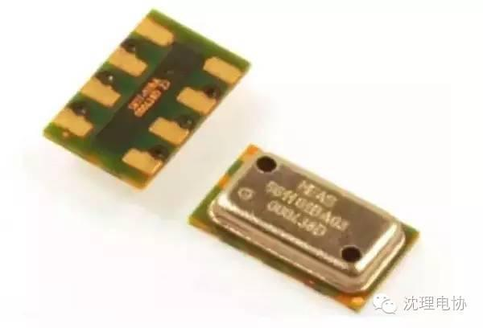
MS5611是传感器中的另一个传奇。芯片大小只有3mm×5mm，传感器精度高于很多的专业航空设备，且价格非常便宜。该传感器由瑞士的MEAS公司推出，在此之前，大多飞行器采用的是摩托罗拉的气压传感器，体积要大几倍，且不是贴片器件，需要“立”在电路板上，MS5611一经推出就立即成为所有飞行器气压测量的标配。
MS5611传感器响应时间只有1ms，工作功耗为1μA，可以测量10-1200mbar的气压数值。MS5611具有SPI和I2C总线接口、与单片机相同的供电电压、-40℃至+85℃的工作温度、全贴片封装、全金属屏蔽外壳、集成24位高精度AD采集器等特性，这些特性使其非常适合在高度集成的数字电路中工作，所以成为了飞行器测试气压高度的首选。
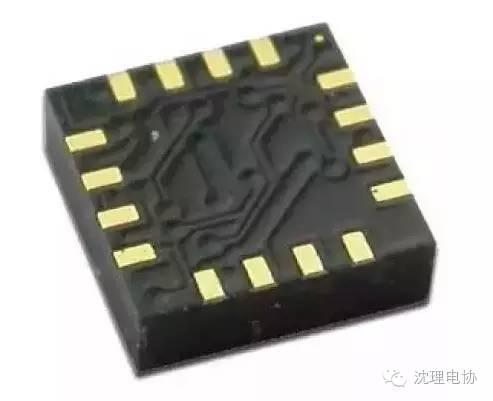
接触过磁阻传感器(也就是磁罗盘传感器)的人都知道，使Z轴磁阻传感器实现扁平化是多么的不容易。霍尼韦尔也是在研发了数十款相关的产品之后，才最终有能力生产出这款全集成的三轴数字罗盘的。我们不得不惊叹于它的体积—3mm×3mm的面积、厚度不足1mm。更加让人惊叹的是其低廉的价格，所以，除了PIXHawk这样极度追求硬件先进性的飞行器以外，其他飞行器如果配有磁罗盘的话，无一例外均使用的是HMC5883。当然，霍尼韦尔早已推出了升级型的HMC5983，将角度测量精度提高到了1°以内。对于爱好者们来说，HMC5883已经够用了。
磁阻传感器的设计难点在于铁氧体的消磁，能够把铁氧体传感器和消磁驱动单元、12位ADC、运算核心等全部集成在如此小的芯片当中是十分不易的。HMC5883其他的特性包括：在±8GS的磁场中实现2mGS的分辨率、与单片机相同的供电电压、-30℃至+85℃的工作环境温度等。虽然ST microelectronics已经推出了集成三轴磁阻传感器和三轴加速度计的LSM303D，并且体积更小、集成度更高，但是HMC5883一直是磁罗盘的首选芯片。
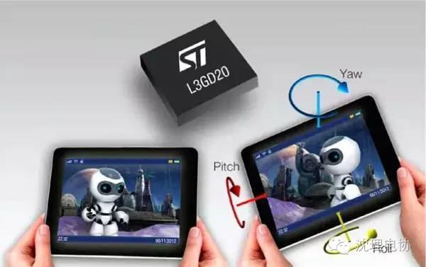
L3GD20的面积仅有4mm×4mm，注定其为移动设备而生。ST是最早一批开发MEMS芯片的厂家，也是最早发布陀螺产品的公司，但L3GD20还是晚来了一步。虽然它精度更高，但是风头已被MPU6000抢走。虽然没有集成三轴加速度计，但是凭借高精度角速率测量、大范围的自定义量程，以及更加低廉的价格，L3GD20逐渐为业界承认，以至于PIXHawk一度想用它取代MPU6000。当然，最终PIXHawk并没有实现替代的愿望，他们并存于这款飞行器之上，互为补充，成就了PIXHawk的冗余设计。
L3GD20具备与单片机相同的供电电压、-40℃至+85℃的工作环境温度、兼容I2C和SPI数字接口、内置可调低/高通滤波器电路、6mA的工作功耗，以及集成的温度传感器，这些同样可作为高集成电路角速率陀螺仪不错的选择。
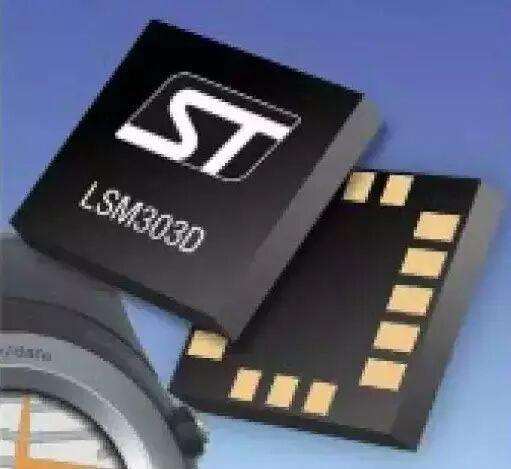
如果说其他传感器是为移动设备而生的，那么LSM303D就是为L3GD20而生的。它与L3GD20一同可以组成完整的9DOF航姿传感器系统(IMU)，并且其供电、测量精度和数字接口几乎一模一样。这套系统要比MPU6000与HMC5883的组合总成本更低、测量精度更高，难怪INVENSENSE要马不停蹄地推出MPU9250系列的单芯片9DOF产品来与其竞争。
与单片机相同的供电电压、-40℃至+85℃的工作环境温度、兼容I2C和SPI数字接口、集成温度传感器，这些参数几乎可以照抄L3GD20。
“好了，本次飞行器的基础知识就普及到这里了，下次如果有人问及无人机的时候，你就可以活学现用哦。“

信息部/吴心成